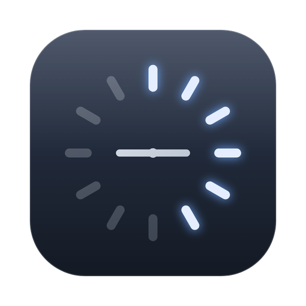
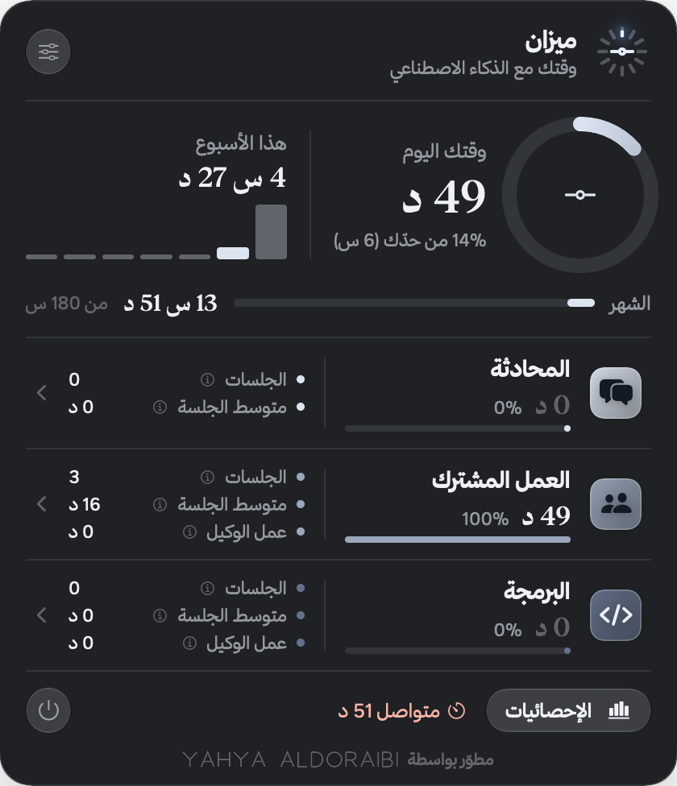
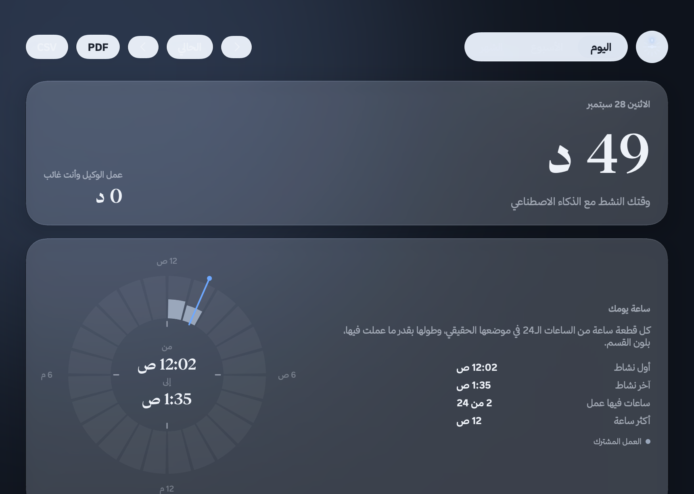

وقتك مع الذكاء الاصطناعي، بميزان.
تطبيق صغير في شريط قوائم الماك يحسب تلقائياً كم تقضي مع كلود وشات جي بي تي وجيمناي، ومتى، ويذكّرك بالراحة.
macOS 14 فأحدث · مفتوح المصدر برخصة MIT · بلا إنترنت


يعمل في الخلفية دون أن تفعل شيئاً. تنظر للشريط فتعرف.
يعرف أي أداة أمامك: محادثات كلود، والعمل المشترك، والبرمجة، وشات جي بي تي، وجيمناي، في تطبيقاتها أو في المتصفح. ولا يحسب الوقت وأنت بعيد عن الجهاز.
كل علامة في الشعار ساعة من يومك، تضيء مع عقارب الساعة. وما يتجاوز حدّك اليومي يتلوّن بلون التحذير.
حلقة من ٢٤ ساعة تريك متى اشتغلت فعلاً، لا كم فقط، بلون كل أداة. مرّر الماوس على أي ساعة لتفاصيلها.
إحصائيات لكل فترة، وشهر يبدأ من اليوم الذي تختاره، وأرشيف للأشهر السابقة، وتقارير PDF وCSV.
تذكير بالراحة بعد العمل المتواصل، وتنبيه عند تجاوز حدّك اليومي. أنت تختار المدة والحد.
لا يتصل بالإنترنت أبداً، ولا حسابات ولا تتبّع. كل شيء محفوظ في قاعدة بيانات محلية على جهازك.
دقيقتان تقريباً.
لماذا يظهر تنبيه آبل؟ التطبيق مجاني وغير موقّع بشهادة مطوّر مدفوعة من آبل، فيطلب النظام تأكيدك في أول فتح فقط. الكود مفتوح بالكامل لمن يريد مراجعته أو بناءه بنفسه.
لماذا صلاحية تسهيلات الاستخدام؟ ليعرف ميزان أي قسم مفتوح أمامك في تطبيق كلود، وأي موقع في المتصفح، فيقرأ عنوان الصفحة فقط. لا يقرأ محادثاتك ولا ما تكتبه، ولا يرسل شيئاً خارج جهازك. بدونها يحسب ميزان وقت التطبيقات المستقلة فقط.
القياس على الماك فقط. استخدامك من الجوال أو الآيباد لا يُحسب.
| الأداة | من أين يقيسها |
|---|---|
| كلود: المحادثة، والعمل المشترك، والبرمجة | تطبيق كلود للماك، وموقع claude.ai، وسجلات Claude Code المحلية |
| شات جي بي تي | تطبيقه للماك، وموقع chatgpt.com |
| جيمناي | موقع gemini.google.com وAI Studio |
«عمل الوكيل» وقت يعمل فيه كلود على مهمتك وأنت بعيد عن الشاشة، ويُعرض منفصلاً ولا يُحسب من وقتك.